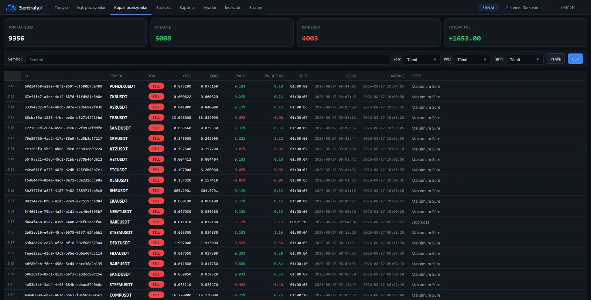
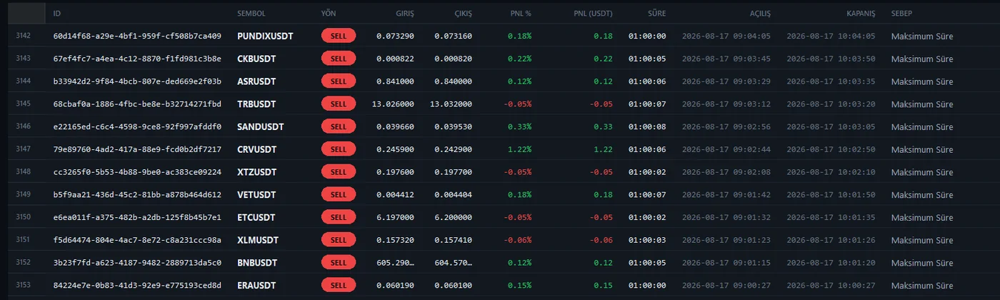

Kapalı pozisyonlar
İşlem Geçmişi ve Arşivler
Kapanan her pozisyonu giriş ve çıkış fiyatı, PnL, süre ve kapanış nedeniyle gör. Sembol, yön, PnL ve tarihe göre filtrele; CSV olarak dışa aktar.

Uygulamanın gerçek ekranı, sanal modda çekilmiştir.
Geçmişten öğren
Her kapanan işlem kaydedilir; özet kartlar toplam işlem, kazanan, kaybeden ve toplam PnL'i gösterir.
Her işlem tüm ayrıntısıyla
Kapanan pozisyonun sembolü, yönü, giriş ve çıkış fiyatı, yüzde ve USDT olarak PnL'i, süresi, açılış ve kapanış zamanı kaydedilir.
- Kapanış nedeni görünür: Stop Loss, Maksimum Süre gibi
- Özet: toplam işlem, kazanan, kaybeden, toplam PnL
- Sanal ve gerçek işlemler aynı akışla

Aradığını bul
Sembol arama ile Yön, PnL ve Tarih filtrelerini birlikte kullanarak belirli işlemlere odaklanabilirsin.
- Yön: BUY ya da SELL
- PnL: kârda ya da zararda
- Tarih aralığına göre daraltma
Kendi analizini yap
Kayıtları CSV olarak dışa aktarıp bir tablo programında inceleyebilirsin. Genel tablo için Raporlar ekranını kullan.
- CSV dışa aktarma
- Raporlar: günlük özet ve başarı oranı
- Raporlarda CSV, PDF ve Excel

İşlem geçmişinde neler var?
Ayrıntı işlem geçmişinde, genel tablo raporlarda.
İşlem ayrıntıları
Giriş, çıkış, PnL %, PnL USDT, süre, açılış ve kapanış zamanı.
Kapanış nedeni
İşlemin neden kapandığı: stop loss, maksimum süre ve diğerleri.
Filtreler
Sembol, yön, PnL ve tarih filtreleri.
CSV dışa aktarma
Kayıtları tablo programında incelemek için dışa aktar.
Özet kartlar
Toplam işlem, kazanan ve kaybeden sayısı, toplam PnL.
Sanal mod
Sanal modda açılan işlemler de aynı akışla takip edilir.
Sık sorulan sorular
İşlem geçmişini dışa aktarabilir miyim?
Evet. Kapalı pozisyonları CSV olarak dışa aktarabilirsin; raporlar ekranında CSV, PDF ve Excel seçenekleri de vardır.
Kapanış nedeni ne işe yarar?
İşlemin stop loss ile mi, süre dolduğu için mi kapandığını gösterir; stratejinin ve risk ayarlarının nasıl çalıştığını anlamana yardım eder.
Geçmiş sonuçlar gelecek için bir gösterge midir?
Hayır. Geçmiş sonuçlar gelecekteki sonuçların göstergesi değildir.
İlgili sayfalar
Stratejini bugün sanal modda dene
Uygulamayı indir, stratejini kur ve gerçek para kullanmadan nasıl çalıştığını gör.